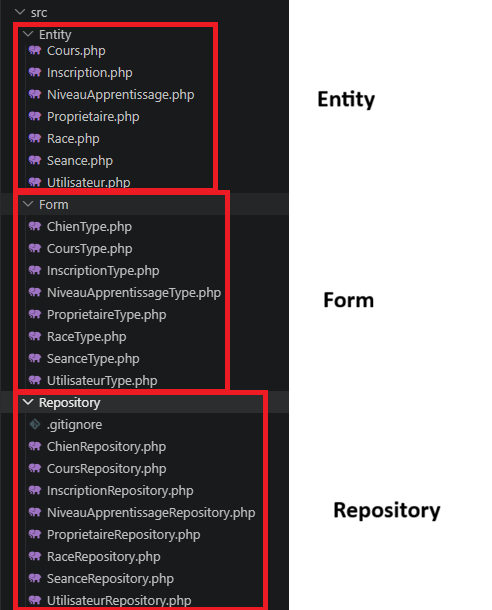
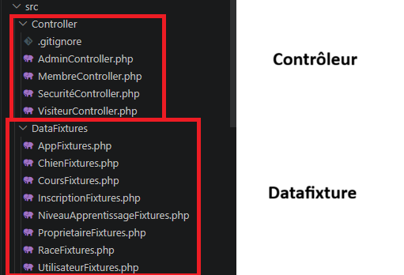
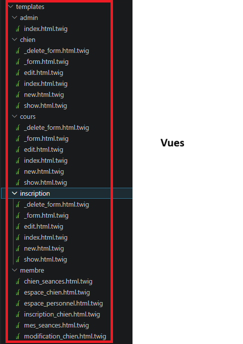
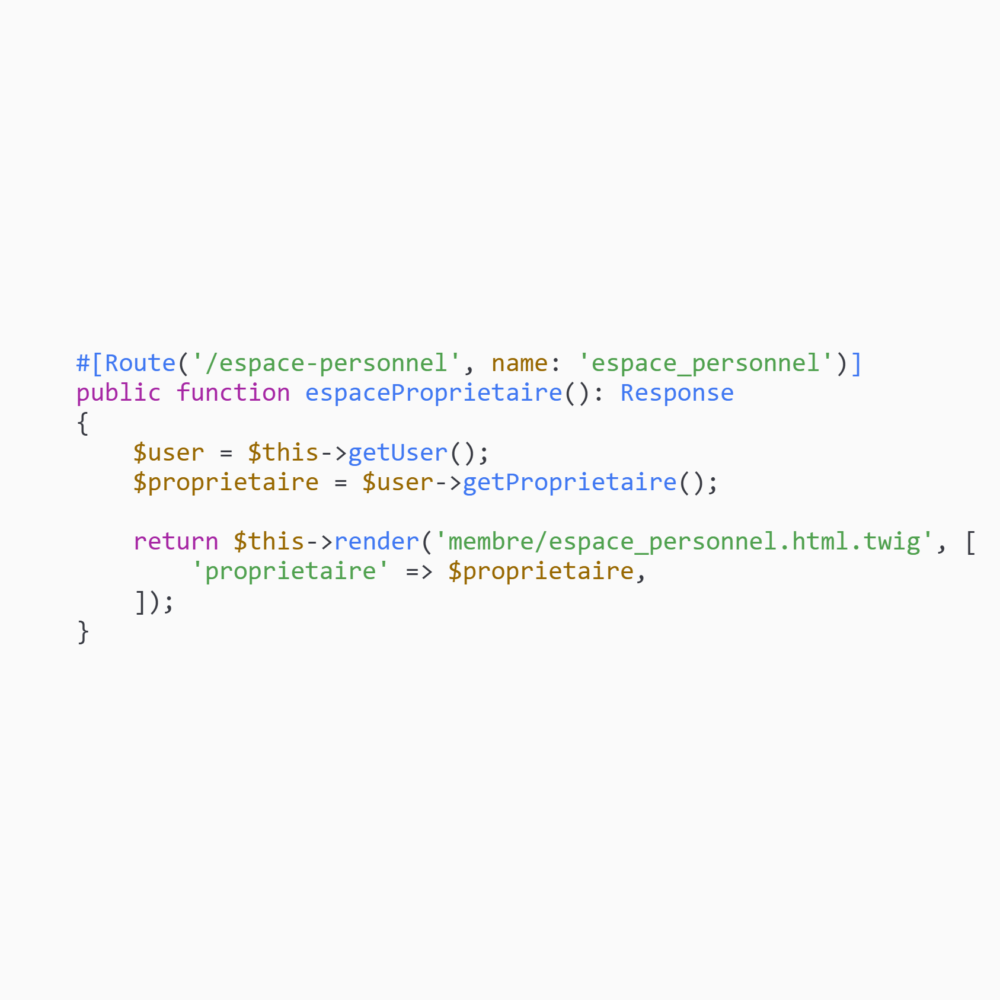
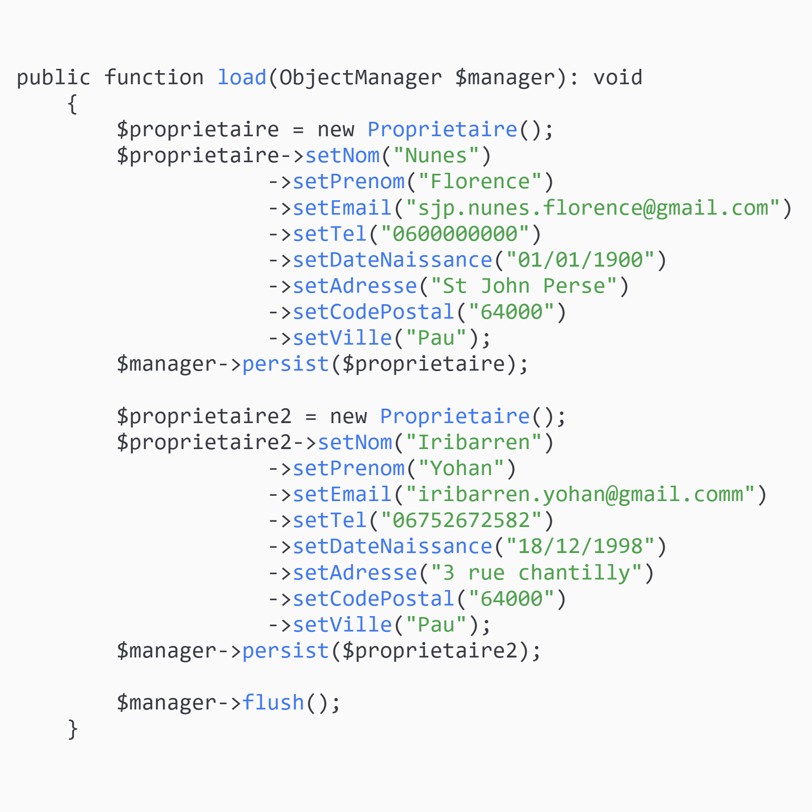
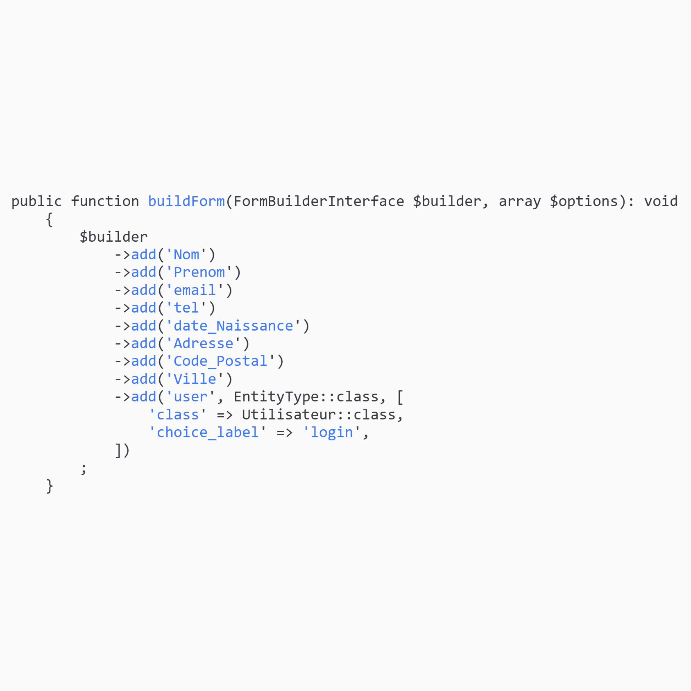
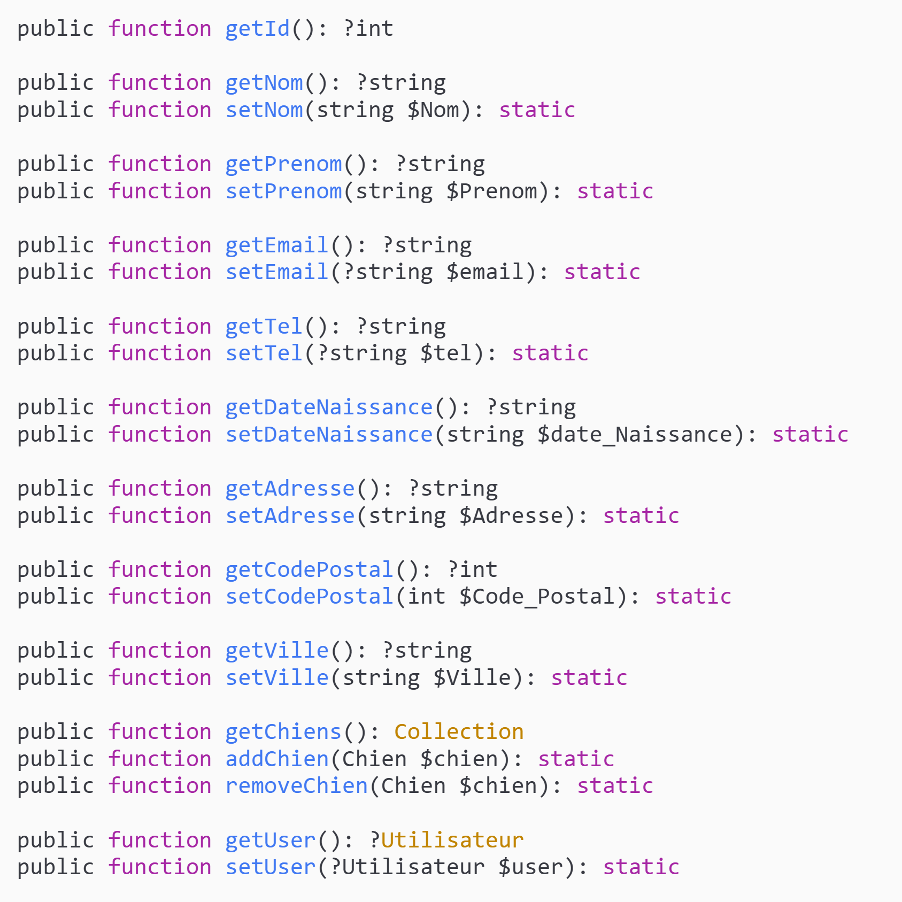
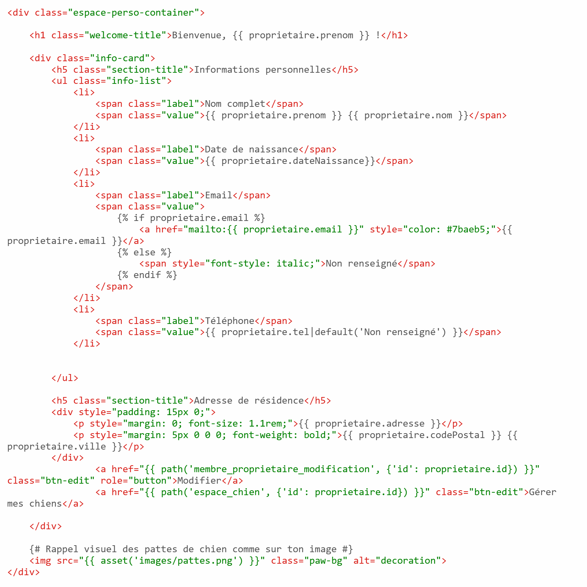

Outils & Technologies
Contexte
Le centre CanisPro Éducation, spécialisé dans l'accompagnement personnalisé (cours individuels, collectifs et agility), souhaitait effectuer sa transition numérique en remplaçant ses outils de gestion rudimentaires par une application web moderne.
En tant qu'équipe de développeurs juniors, notre mission consistait à maintenir et faire évoluer une application web développée sous le framework Symfony. Le projet vise à centraliser la gestion des chiens, des propriétaires et des inscriptions, tout en garantissant une sécurité stricte des accès via différents rôles.
L'intervention, prévue sur un volume de 24 heures, imposait une méthodologie rigoureuse : méthode agile, GANTT (ClickUp), branches GitHub dédiées, validation par fixtures et production de documentation.
Équipe du projet
Architecture technique — MVC Symfony
L'application repose sur l'architecture MVC Symfony :
les Modèles correspondent aux entités Doctrine (Utilisateur, Propriétaire, Chien, Race, NiveauxApprentissage, Cours, Séance, Inscription),
les Vues aux fichiers Twig (templates/),
et les Contrôleurs aux classes PHP dans src/Controller/.

src/ — Entity · Form · Repository

Résultat — Espace Membre


Résultat — Espace Administration

Code — Contrôleur · Modèle · Vue
Extraits de code illustrant l'architecture MVC Symfony : le contrôleur orchestre la logique, le modèle (entités, formulaires, repositories) gère les données, et la vue Twig produit le rendu HTML.




